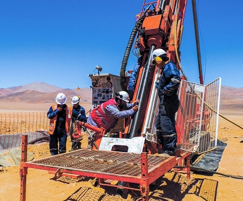

¿Cómo se Obtiene y Cómo Funciona la Energía Geotérmica?
Extracción
A continuación se introducen sondas geotérmicas en forma de tuberías. Estas contienen agua o líquido anticongelante que al descender a las zonas más profundas se calienta y vuelve a subir accionando una bomba donde se produce el intercambio de calor
Descubre más ›
Perforación
Con el fin de acceder a esa fuente de agua caliente del subsuelo, es necesario localizar y perforar la zona adecuada. Estas perforaciones suelen tener entre 10 y 15 centímetros de diámetro y su profundidad depende de las condiciones físicas y geológicas de la zona.
Descubre más ›Producción
Para transformar la energía calorífica en electricidad es necesario instalar sobre el yacimiento una planta geotérmica que recoja el fluido natural (agua y vapor) y los transforme en energía cinética, mediante el uso de una turbina. Generalmente, el agua y el vapor se separan.
Descubre más ›